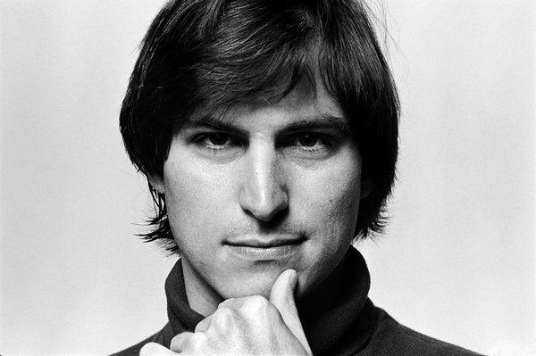

Steve Jobs
The father of the Personal Computer

Steve Jobs is the founder of Apple and one of
the men
responsible for the birth of the pc market and his vision
has forever changed the World
The life of Steve Jobs
- February 24, 1955: Steve Jobs Birth
- 1960: Jobs Family Moved to Mountain View
- 1968: Job at HP
- 1969: Met Steve Wozniak
- 1972: Blue Boxes
- 1973: Reed College
- March 1976: Apple I
- April 17, 1977: Apple II
- December 12, 1980: Apple Goes Public
- January 24, 1984: Macintosh Introduced
- September 17, 1985: NeXT Founded
- January 30, 1986: Pixar
- April 1989: Entrepreneur of the Decade
- May 1991: Pixar Signed Deal with Disney
- December 1996: Apple Purchased NeXT
- October 23, 2001 Release of the first iPod
- 2003: Diagnosed with Pancreatic Cancer(Fall 2003)
- January 9, 2007: The iPhone
- April 2009: Liver Transplant
- 2010: Release of iPad and iPhone 4
- August 24, 2011: Resigned
- October 5, 2011: Death of Steve Jobs